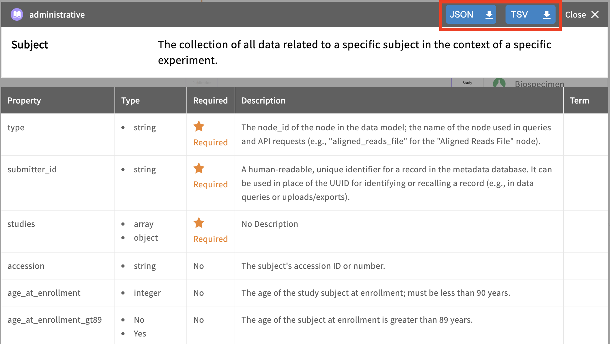
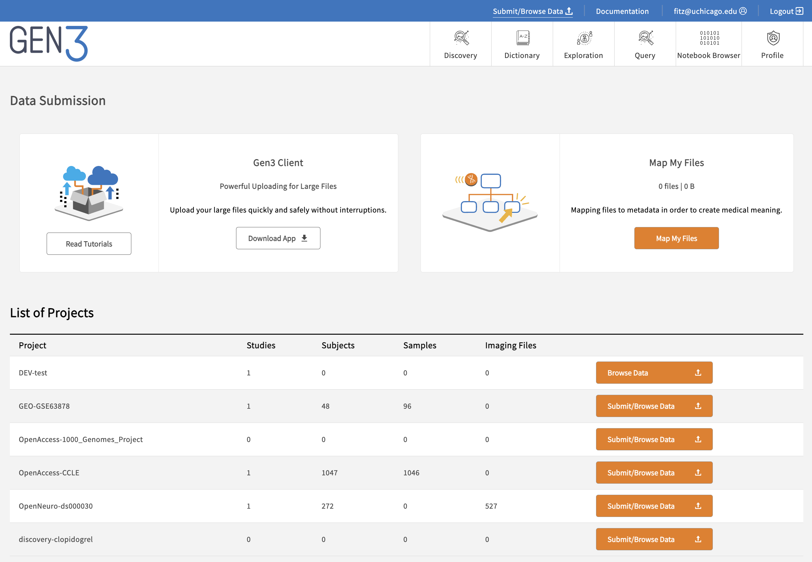
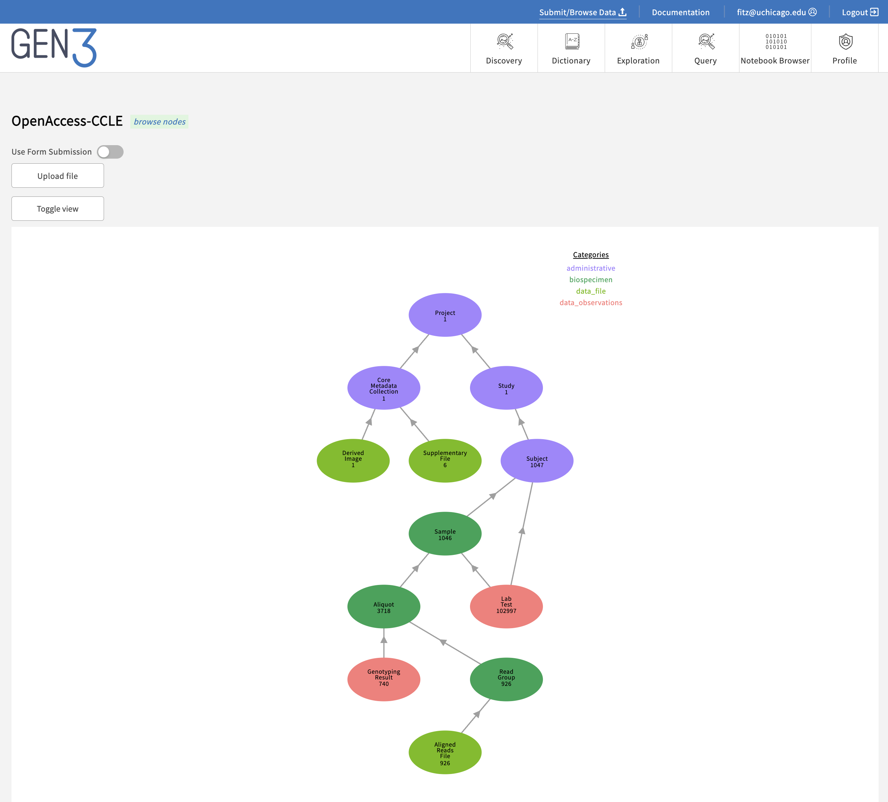

Structured Data (Clinical or experimental data)¶
Data is structured if it is organized into records and fields, with each record consisting of one or more data elements (data fields). In biomedical data, data fields are often restricted to controlled vocabularies to make querying them easier. In Gen3 this would include clinical or experimental data submitted to the graph model, which is queriable via a GraphQL API. It can be flattened (via ETL) and the result viewable on the Data Portal Exploration Page.
After creating a data dictionary you are ready to submit structured data. These data are submitted in tab-separated value (TSV) files for each node in the project, which can be downloaded from the "Dictionary" page of the data commons website. (e.g. Gen3 Data Hub).
It may be helpful to think of each TSV as a node in the graph of the data model. Column headers in the TSV are the properties stored in that node, and each row represents a "record" or "entity" in that node. When a TSV is successfully submitted, each row in that TSV becomes a single record in the node.
Properties in a node are either required or not, and this can be determined by referencing the data dictionary's viewer's "Required" column for a specific node.
There are a number of properties that deserve special mention:
-
submitter_id: Each record in every node will have asubmitter_id, which is a unique alphanumeric identifier (any combination of ASCII characters) for that record across the whole project and is specified by the data submitter. It is entirely up to the data contributor what the submitter_id will be for each record in a project, but the string chosen must be unique within that project. -
type: Every node has atypeproperty, which is simply the name of the node. By providing the node name in the "type" property, the submission portal knows which node to put the data in. -
id: Every record in every node in a data commons has the unique propertyid, which is not submitted by the data contributor but rather generated on the backend. The value of the propertyidis a 128-bit GUID (a unique 32 character identifier). -
project_idandcode: Every project record in a data commons is linked to a parentprogramnode and has the propertiesproject_idand acode. The propertyproject_idis the dash-separated combination ofprogramand the project'scode. For example, if your project was named 'Experiment1', and this project was part of the 'Pilot' program, the project'sproject_idwould be 'Pilot-Experiment1', and the project'scodewould be 'Experiment1'. Finally, just like every record in the data commons, the project has the unique propertyid, which is not to be confused with the project'sproject_id.
Template TSVs are provided in each node's page in the data dictionary.

Order of Node Submission¶
The prepared TSV files must be submitted in a specific order due to node links. Referring back to the graphical data model, a record cannot be submitted without first submitting the record(s) to which it is linked upstream (its "parent"). If nodes are submitted out of order, such as submitting a TSV with links to parent records that don't yet exist, the validator will reject the submission on the basis that the dependency is not present with the error message, "INVALID_LINK".
In a Gen3 Data Commons, programs and projects are two administrative nodes in the graph database that serve as the most upstream nodes. A program must be created first, followed by a project. Any subsequent data submission and data access, along with control of access to data, is done through the project scope. In some projects only a subset of submitters may have access to create a program or project.
Before you create a program and a project or submit any data, you need to grant yourself permissions. First, you will need to grant yourself access to create a program and second, you need to grant yourself access to see the program. You can create the program before or after having access to see it.
For this, you will need to edit the Secrets/user.yaml file following the docs shown here.
Make sure to update user privileges:
docker exec -it fence-service fence-create sync --arborist http://arborist-service --yaml user.yaml
To create a program, visit the URL where your Gen3 Commons is hosted and append /_root. If you are running the Docker Compose setup locally, then this will be localhost/_root. Otherwise, this will be whatever you set the hostname field to in the creds files for the services with /_root added to the end. Here, you can choose to either use form submission or upload a file. We will go through the process of using form submission here, as it will show you what your file would need to look like if you were using file upload. Choose form submission, search for "program" in the drop-down list and then fill in the "dbgap_accession_number" and "name" fields. As an example, you can use "123" as "dbgap accession number" and "Program1" as "name". Click Upload submission json from form and then Submit. If the message is green ("succeeded:200"), that indicates success, while a grey message indicates failure. More details can be viewed by clicking on the "DETAILS" button. If you don't see the green message, you can review the sheepdog logs for possible errors and check the Sheepdog database (/datadictionary), where programs and projects are stored. If you see your program in the data dictionary, neglect the fact that at this time the green message does not appear and continue to create a project.
To create a project, visit the URL where your Gen3 Commons is hosted and append the name of the program you want to create the project under. For example, if you are running the Docker Compose setup locally and would like to create a project under the program "Program1", the URL you will visit will be localhost/Program1. You will see the same options to use form submission or upload a file. This time, search for "project" in the drop-down list and then fill in the fields. As an example, you can use "P1" as "code", "phs1" as "dbgap_accession_number", and "project1" as "name". If you use different entries, make a note of the dbgap_accession_number for later. Click Upload submission json from form and then Submit. Again, a green message indicates success while a grey message indicates failure, and more details can be viewed by clicking on the "DETAILS" button. You can review in the /datadictionary whether the program and project have been correctly stored.
After that, you're ready to start submitting data for that project keeping in mind that you must submit from "top to bottom" in the data model to make sure each new node points to an existing node in the database. If nodes are submitted out of order, such as submitting a TSV with links to parent records that don't yet exist, the validator will reject the submission on the basis that the dependency is not present with the error message, "INVALID_LINK".
As an alternative to creating the program and project nodes in the Data Portal, you can instead use the Gen3 Submission SDK, which has a comprehensive set of tools to enable users to script submission of programs and projects.
Sample Code for submission of a Program and Project to a data commons:
import gen3
from gen3.submission import Gen3Submission
Gen3Submission.create_program(program_json)
Gen3Submission.create_project('test_program', project_json)
Specifying Required Links¶
At least one link is required for every record in a TSV, and sometimes multiple links could be specified. The links are specified in a TSV with the variable header <nodes>.submitter_id, where <nodes> is the back-reference of the upstream node the record is linking to. The value of this link variable is the specific submitter_id of the parent record. TSV or JSON templates that list all the possible link headers can be downloaded from the Data Dictionary Viewer on the data commons' website. Properties that represent these links such as “subjects.submitter_id” or “studies.submitter_id” are array variables and can take either a single submitter_id or a comma-separated list of submitter_ids in the case that a single record links to multiple records in its parent node.
For example, there are four cases in two studies in one project. The study node was made with two study submitter_ids: "study-01" and "study-02". The "case.tsv" file uploaded to describe the study participants enrolled will have a corresponding study.
| case | submitter_id | studies.submitter_id |
|---|---|---|
| 1 | case_1 | study-01 |
| 2 | case_2 | study-02 |
| 3 | case_3 | study-01 |
| 4 | case_4 | study-01 |
In this example cases 1, 3, and 4 all belong to "study-01", but case 2 belongs to "study-02". All the cases have different submitter_ids and these will be used in the subtending node that refers to a specific case.
NOTE: The
submitter_idneeds to be unique not only within one node, but across all nodes in a project. The combination ofsubmitter_idandproject_idmust be unique.
Specifying Multiple Links¶
Links can be one-to-one, many-to-one, one-to-many, and many-to-many. Since a single study participant can be enrolled in multiple studies, and a single study will have multiple cases enrolled in it, this link is "many-to-many". On the other hand, since a single study cannot be linked to multiple projects, but a single project can have many studies linked to it, the study -> project link is "many-to-one".
Properties that represent links, like “subjects.submitter_id” or “studies.submitter_id” are array variables and can take either a single submitter_id or a comma-separated list of submitter_ids in the case that a single record links to multiple records in its parent node. Using the example above, the entry in the studies.submitter_id can be "study-01, study-02".
Begin Metadata TSV Submissions¶
To submit a TSV in the data portal:
-
Login to the data portal for the commons.
-
Click on "Submit Data" in the top navigation bar.

-
Click on "Submit Data" beside the project of interest to submit metadata.
-
Click on "Upload File".

-
Navigate to the TSV from your local directory and click "open". The contents of the TSV should appear in the grey box below.
-
Click "Submit".
A message should appear that indicates either success (green, "succeeded: 200") or failure (grey, "failed: 400"). Further details can be reviewed by clicking on "DETAILS", which displays the API response in JSON form. Each record/entity that was submitted, gets a true/false value for "valid" and lists "errors" if it was not valid.
For anything other than success, check the other fields for any information on the error with the submission. The most descriptive information will be found in the individual entity transaction logs. Each line in the TSV will have its own output with the following attributes:
JSON
{
"action": "update/create",
"errors": [
{
"keys": [
"species (the property name)"
],
"message": "'Homo sapien' is not one of ['Drosophila melanogaster', 'Homo sapiens', 'Mus musculus', 'Mustela putorius furo', 'Rattus rattus', 'Sus scrofa']",
"type": "ERROR"
}
],
"id": "1d4e9bb0-515d-4158-b14b-770ab5077d8b (the GUID created for this record)",
"related_cases": [],
"type": "case (the node name)",
"unique_keys": [
{
"project_id": "training (the project name)",
"submitter_id": "training-case-02 (the record/entity submitter_id)"
}
],
"valid": false,
"warnings": []
}
The "action" above can be used to identify if the node was newly created or updated. Updating a node is submitting to a node with the same submitter_id and overwriting the existing node entries. Other useful information includes the "id" for the record. This is the GUID for the record and is unique throughout the entirety of the data commons. The other "unique_key" provided is the tuple "project_id" and "submitter_id", which is to say the "submitter_id" combined with the "project_id" is a universal identifier for this record.
To confirm that a data file is properly registered, enter the GUID of a data file record in the index API endpoint of the data commons: usually "https://gen3.datacommons.io/index/GUID", where "https://gen3.datacommons.io" is the URL of the Gen3 data portal and GUID is the specific GUID of a registered data file. This should display a JSON response that contains the URL that was registered. If the record was not registered successfully, it is likely an error message will occur. An error that says "access denied" might also occur if the user is not logged in or the session has timed out. Note, that for these user guides, https://gen3.datacommons.io is an example URL and can be replaced with the URL from other data commons powered by Gen3.
Note: Gen3 users can also submit metadata using the Gen3 SDK, which is a Python library containing functions for sending standard requests to the Gen3 APIs. For example, the function
submit_filefrom the Gen3Submission class will submit data in a spreadsheet file containing multiple records in rows to a Gen3 Commons. The code is open-source and available on GitHub along with documentation for using it. Furthermore, this section describes steps on how to get started.
Review submitted structured data¶
To review the content of submitted data, you can start from the directions above and instead of selecting "Upload" in Step 4, you can review the graph below. You can select particular nodes to view individual records where you have the option to delete, view, or download.
Note: Users who are not authorized to submit data may see a “Browse Data” button instead of “Submit Data”. These users will still have access to view the graph and individual nodes, but not to upload or delete.
The number you see underneath the node name, for example ‘subject’, reflects the number of records in that node of the project. The “Toggle View” button is used to show or hide nodes in the data model that the project has no records for.
TSV Formatting Checklist¶
- Specify the node
typefor every row. This is the name of the node (ornode_id), and it must be exactly the same for every row. - Specify the
submitter_idof every record by entering a unique text identifier in each row. Make sure you don't use the same value in more than one row of your TSV because every record in a project must have a uniquesubmitter_id! - Specify the links to the parent node(s) for each record. Note: parent records must exist before submitting child records! You can specify either the links with either the
parents.submitter_idor theparents.id - Fill in all required properties. Every row in the TSV must have a value for all required properties. Optional properties can be filled in for only some rows or the column can be left out entirely.
Templates can be downloaded from the data dictionary page of your commons. See the Gen3 Data Hub as an example and click on the TSV option for each node.
Troubleshooting and Finishing the Submission¶
If the submission throws errors or claims the submission to be invalid, it will be the submitter's task to fix the submission. The best first step is to go through the outputs from the individual entities, as seen in the previous section. The error fields will give a rough description of what failed the validation check. The most common problems are simple issues such as spelling errors, mislabeled properties, or missing required fields.